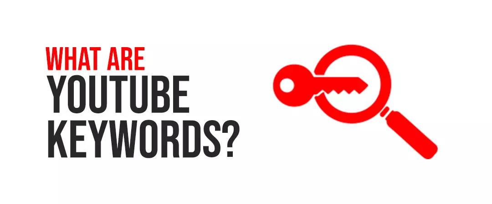
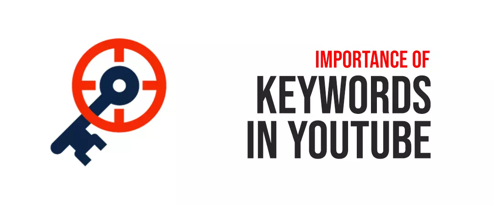
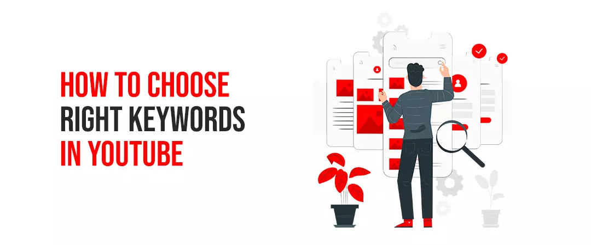
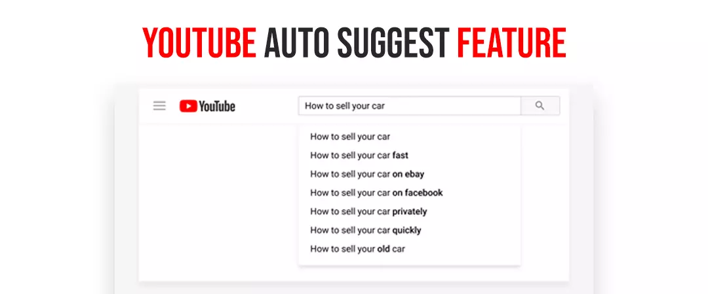
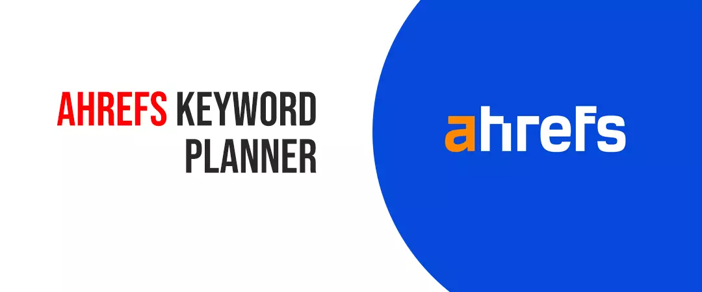
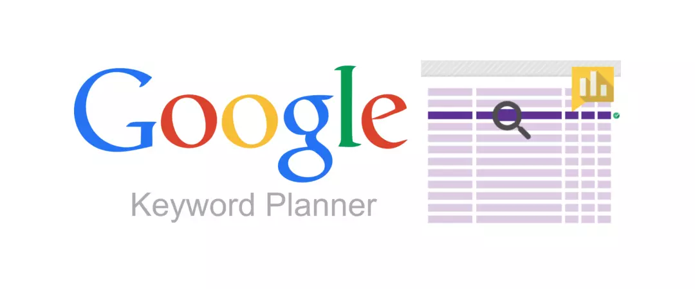
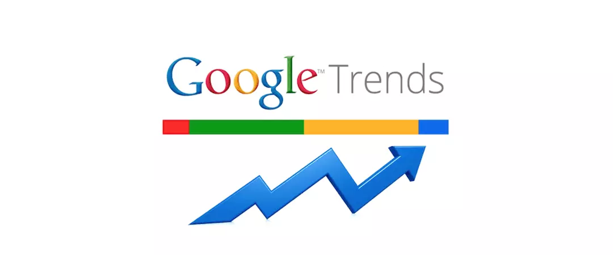
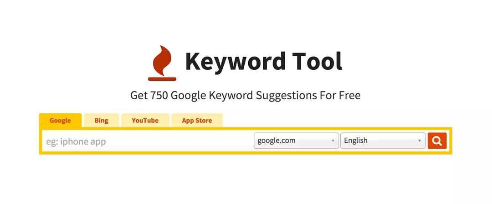
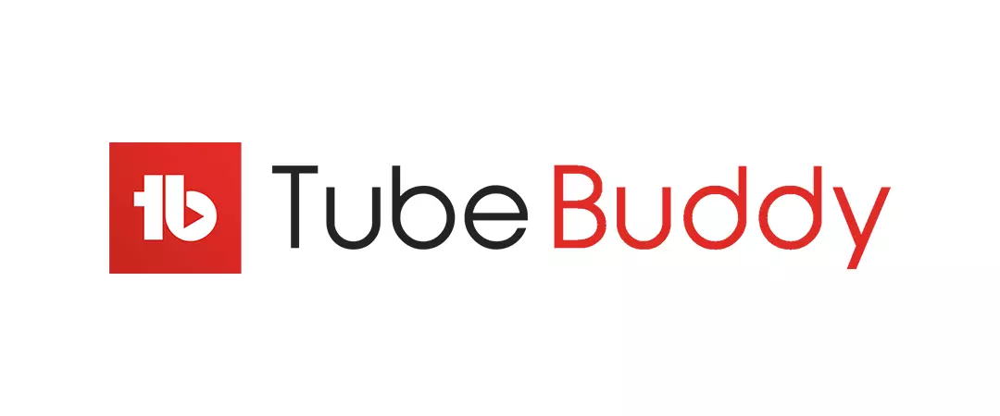
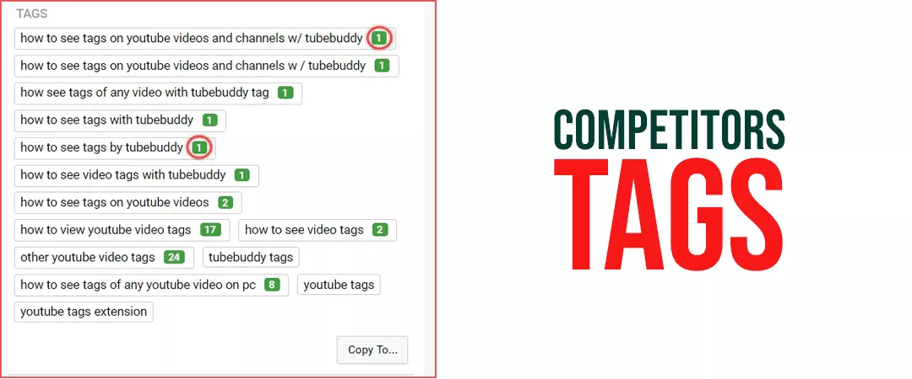

YouTube keyword research is a simple process of uncovering all the terms / phrases your target is searching for to watch videos similar to yours on YouTube. This can be done through comprehensive keyword research tools such as Keyword Planner, SEMrush, Ahrefs, YouTube suggestion etc. YouTubers use these terms and phrases to optimize their video titles, descriptions, tags, etc., to achieve better ranking, discoverability, be in recommended videos, to be used in the content so that YouTube associates their videos with a particular niche while indexing, the ultimate goal is to increase the flow of traffic and watch time.
Keep reading as we break down this process and lay it out for you!
The very first thought that comes across in a person’s mind when they set out to start their YouTube channel is without a doubt – what is my target audience searching for and how do I reach them? Well, YouTube Keyword research is the only answer to all your problems and will help you reach the right audience or customers. According to Alexa’s global traffic rankings, YouTube is the second most visited website in the world. To drive your specific target audience from these 2 billion monthly active users on Youtube, you need to harness the right keywords to optimize your Youtube videos.
While you may know what your video is about, the YouTube algorithm may not understand the same easily. Thus, you should know how to explain the algorithm what your video is about with the help of right keywords, so that the YouTube algorithm understands to who and how it needs to show your content to on its platform. In this blog, we are going uncover all the secrets that you need to know in order to increase visibility, discoverability, viewership, subscribers, and rankings on the YouTube platform with the help of the right keywords.
Let’s begin!
Contents
- 1. What are YouTube keywords?
- 2. Importance of keywords in YouTube
- 3. What is YouTube keyword research?
- 4. YouTube Auto Suggest feature
- 5. A hrefs Keyword Explorer
- 6. Google Keyword Planner
- 7. Cyfe
- 8. Google trends
- 9. KeywordTool.io
- 10. Google Search Console
- 11. SEMrush
- 12. VidIQ’s Keyword Tool
- 13. TubeBuddy
- 14. Leverage “video” keywords
- 15. Spy at your Competitor’s videos
- 16. Competitors tags
What are YouTube keywords?

Before digging deep into this blog, lets make sure your basics are clear you understand what we mean by YouTube keywords and their research. According to Moz, “In terms of SEO, keywords are the words and phrases that searchers enter into search engines”. Thus, YouTube keywords are words / phrases used in a Youtube video title, description or tags, that give YouTube’s algorithm evidence to what the video is about and then it sorts it in the SERPs accordingly.
For example, if you are creating a video on “Best Fashion Trends of 2021”, you can use keywords such as,
- Best fashion looks
- Fashion trends of 2021,
- What to wear in 2021,
- Outfit ideas for 2021, etc.
Importance of keywords in YouTube:

According to YouTube, “adding relevant and descriptive keywords to your video will help viewers find your content”. Hence, keywords are really important for more reach, better visibility, video recommendations and ranking. To leverage power of a right keyword, try and imagine the first word, or phrase, or cognizant thought, that impulsively comes into your brain, when you think of a particular topic.
Many YouTubers sometimes buy YouTube subscribers legit to give their channel a boost and put their organic YouTube growth into momentum. Now that we have a crystal-clear understanding of YouTube keywords and their importance, it’s time we go deeper into this!
How to choose right keywords in YouTube videos?

A comprehensive research of keyword will connect your videos to the right audience and give incredible results.
Identify target audience
You must identify your target audience, their needs, preferences, and interests in order to find the target keywords. Audience research will portrait the true image of what keywords you need to use for optimizing your YouTube videos for higher ranking. YouTube Analytics provides youtubers with an impression of some of the search terms viewers used to find their videos.
Be intent focussed
Focus on your channel’s niche as well as video’s intent — what service or value do you want to provide to your target audience? List the phrases that you think your target audience might search for. Then, conduct keyword research for YouTube.
Parameters for well researched keywords
- Consider the competition level of a keyword.
- Keyword difficulty
- Monthly search volume
- Related phrases or search terms
What is YouTube keyword research?
YouTube keyword research is an in depth research process which requires YouTubers to discover phrases, sentences or textual keywords which viewers might type (or say in case of voice search) to find a specific video of their interest. This process can be done manually by thinking about the prospects and stepping into their shoes, what is in their minds? What they want? What they might search? How to convince / satisfy their need? , else the process can be done with the help of tools and techniques such as YouTube suggestions, Semrush, Ahrefs, Google trends and many more!
YouTube Keyword Research importance
According to Statista, YouTube has 2.3 billion monthly users and 720,000 hours of content is being uploaded to YouTube every single day. Meaning, there is no lack of video content and those who consume on the platform of YouTube. Although, these content consumers need a direction to find the content their interested in consuming. This is exactly what YouTube Keywords do! They allow you and your target audience to navigate through this ocean of content and connect. Keywords used in your title, description and tags, allow the algorithm to connect your content it with the right audience.
How to do YouTube Keyword Research
To begin with, you must target keywords with high search volume and low competition in order to get more viewership. There are several tools that you can take benefit of. These tools will help you find the right keywords to add in your content to be discovered by your target audience.
Now, we’ll discuss some of the best keyword research tools and how they can help you:
- 1. YouTube Auto Suggest feature
- 2. Ahrefs
- 3. Google Keyword Planner
- 4. TubeBuddy
- 5. VidIQ’s Keyword Tool
- 6. Cyfe
- 7. Google trends
- 8. KeywordTool.io
- 9. SEMrush
YouTube Auto Suggest feature

Insert your subject into the search bar which generates popular searches on Youtube. You will find here the popular keyword around your topic. These are best as autosuggest keywords are usually ‘long tail keywords’, they are not very competitive and consequently easier to rank for. The prodigious significance of Autocomplete is that it only suggests popular keywords. Here, YouTube is factually telling you: “these are terms that lots of viewers use to find videos on YouTube!”.
Voila! You just got a handful of great keywords to optimize your videos around. For instance, let’s say that you were thinking of producing a video about cooking tips.
Great, when you type “cooking tips” in the YouTube search bar, you can see that it suggests 4-5 other keywords related to this term, such as,
- Cooking tips
- Cooking tips and tricks
- Cooking tips in Tamil
- Cooking tips for beginners
- Cooking tips 5-minute craft
These auto-suggested keyword ideas are great potential video topic notions, which are excellent keywords too.
Now, you may wonder, why?
- Youtube suggests the keywords according to their popularity
- Autocomplete suggestions are usually long (5+ words) tail keywords. “long tail” keywords are less competitive and have higher scope to rank for.
Ahrefs Keyword Explorer

A hrefs Keywords Explorer produce a database of over 640 million YouTube keywords. You can search, practically any keyword and track metrics motorized by clickstream data, counting home-grown and global search volume, clicks, click percentage, and more. Leveraging, this Youtube SEO tool, you can see how many people search for a query on YouTube every month, including how many of those search’s result in clicks on search pages.
Analysing clicks and volume together can provide you more than looking at search volume unaccompanied. Keywords Explorer also helps you crisscross SEO metrics for up to 10,000 keywords in a single session. You can either copy-paste them in or upload a file. As, this tool emphases on YouTube unambiguously, therefore, Ahrefs is a terrific opportunity for determining search volumes, clicks, competition and more.
Google Keyword Planner

Plan a keyword research for Youtube and start advertising your videos using Google Ads, for that you need to make them appear in Google search results. To do so you’ll need to leverage Google Keyword Planner. Go to Keyword Planner and click on “Discover new keywords”. Here, add ideas revolving around your main keyword, set your location and hit ‘search’. Download your keyword report and voila, you get all the keywords users are searching for related to your main keyword. Video result keywords are ones that Google has considered imperative & adequate to be encompassed in its search results. So, check out these keywords that contain videos in Google searches and target them to rank on both, YouTube and Google.
Cyfe
With traffic analytics, Cyfe represents the keywords you can rank for and the ones that are most prevalent across numerous search engines. If used strategically, Cyfe tool can prove to be very helpful.
Google trends

This magic tool will aid you to discover the most prevalent keywords being searched for on YouTube. Google Trends represents whether interest in a subject on YouTube is rising or declining over time. It further assists you compare the relative popularity of two or more keywords. You must go ahead choosing your keyword from those trending.
Remember, target only the keywords related to your niche. Google Trends is widely used and most popular research tool for marketers. Select the option under the “Web Search” tab, type in your keyword and voila! You’ll explore some exceptional insights into the intensifying or dwindling popularity of your search term.
KeywordTool.io

It is a freemium tool that is fundamentally a wholesale YouTube autosuggest scraper. It also adds and prepends the query with numerous letters and numbers and scrapes the autosuggest results for those.
KeywordTool.io categorizes the keywords into four tabs:
Keyword Suggestions tab:
Altogether autosuggest keywords (apart from those structured as questions)
Question’s tab
Autosuggest keywords configured as questions.
Prepositions’ tab
Autosuggest keywords encompassing propositions (from, for, after, etc.).
Hashtags’ tab
Represents Autosuggest keywords with hashtags. Generally, you may end up with a list of a hundred keyword notions. Filter these results according to your Youtube videos subject.
Google Search Console
It is a free keyword research tool. It allows YouTubers study their performance and provide methodologies to perform better.
Leveraging this tool, you can optimize content based on your search queries, get content on Google by submitting URLs for crawling, get alerted to problems that you can fix and increase your search rankings.
To check keywords represented in search results:
- Sign up with Google Search Console
- Below 'Performance' select 'Search Results.'
- Change the search type if you want to and alter the date range.
SEMrush
SEMrush offers instinctive keyword research tools that digital marketers can leverage to increase traffic to their YouTube marketing video and beat competitors. With useful information and powerful keywords, you can produce innovative and thought-provoking content ideas based on what your target audience wants to see. It helps you to save time by managing keywords, tracking performance metrics, and more.
This Keyword Magic Tool runs on a database of over 20 billion keywords to support you choose the best keyword for your YouTube video. By accumulating a principal list of associated keywords based on your target primary keyword, this tool can help you even in finding long-tail keywords.
VidIQ’s Keyword Tool
VidIQ is a freemium Chrome extension that provides supplementary data to the YouTube UI. It is somewhat alike to TubeBuddy. In the search results, it represents search volume, competition, complete keyword score, related queries, keyword stats, and the tags from the top-ranking videos. vidIQ takes in account the “total amount of engagements (crossways YouTube, Reddit, Twitter, Facebook), view velocity of a particular video, and views it gained.”
It has a keyword research feature especially for YouTube. To leverage it, just type a keyword into it. You can know the competitiveness of the keywords using it. This tool further delivers SEO "score", which you can analyse to optimize your videos for best possible keyword.
TubeBuddy

TubeBuddy is another freemium browser extension for Chrome. It progresses a sidebar to the YouTube UI with supplementary keyword data. It represents global search volume, competition, and an overall keyword score out of 100. According to TubeBuddy, their keyword score tells you “how good a keyword is to target based on search volume and competition.”
When doing Keyword research for Youtube, use TubeBuddy SEO tool. TubeBuddy helps you manage the creation, optimization, and promotion of your YouTube video content. It enables you to use its automatic language translator to helps you rank for non-English keywords, as a good Youtube keyword explorer, giving best tag suggestions, and providing you with a rank tracker for your published videos.
Leverage “video” keywords
Accumulate a list of keywords from Google analytics and search them on Google keyword planner for more keyword ideas. You must include the word “video” on each keyword. You can also, leverage Google spreadsheets or keyword multiplier to produce more keywords ideas.
Spy at your Competitor’s videos
Discover a powerful competitor video in your niche and check out the Youtube channels keywords they included in their video’s title, description and tags. This is a dominating strategy to find out what helped them to become successful and will undoubtedly work wonders for you, too.
Look deeper in these data of your competitors
- Keywords
- Backlinks
- Ad campaigns
- Highest performing video
Spy at Competitors reports to check out who is your competitor online, check out the level of competition and what their present fortes and weaknesses are. You can also, find your competitors quickly with AWR by just entering the keywords you’re targeting for YouTube into the app and it will provide you the list of top videos or YouTube channels that rank superlative and magnify the most traffic.
You can compare their success and performance with your own. You can find up to 50 YouTube competitors in Advanced Web Ranking, per project, with no increment in your monthly subscription fees.
Competitors tags

Want to dig deeper than a video’s title and description, you can leverage video’s tags of your competitors. YouTube doesn’t display these openly, so you’ll need to move to the page’s HTML. To get competitor’s tags, right click on the page and click “View page source” You will get the page’s HTML code. Just search the page (“ctrl + f”). Then, type in “keywords”
The phrases that follow are that video’s tags. You can use Youtube tag generator or Youtube video tags finder to find powerful tags to optimize your videos. YouTube is enigmatic and hides your competitor’s tags that contain their keywords. However, some tools will help you see what your competitors are using. They’ll also represent the keywords your competitors use. TubeBuddy and vidlQ both have free and paid versions to find these hidden tags.
So, what are you waiting for?
Leverage the whole process of keyword research for Youtube and attack the target keywords to optimize your Youtube videos to drive maximum target audience and grow your Youtube channel in a success stream!
Feel free to share!